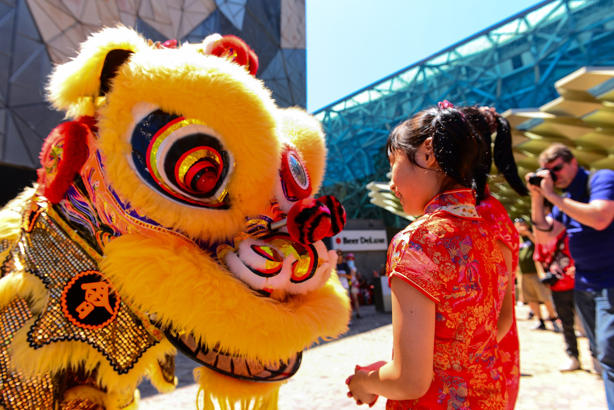
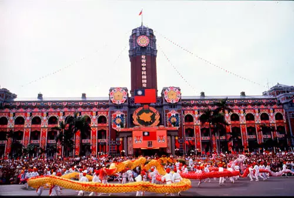
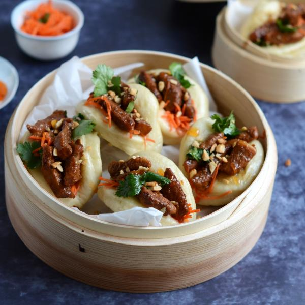

Traditions
Le Nouvel An chinois 春节
Le Nouvel An chinois, soit le Nouvel An selon le calendrier lunaire, est la fête la plus longue et la plus importante à Taïwan. Sa date varie selon le signe astrologique chinois. Il peut avoir lieu entre fin janvier et début février. La coutume consiste à profiter de la nouvelle année
pour régler ses dettes, acheter de nouveaux vêtements, faire le grand nettoyage de printemps et célébrer des fêtes opulentes en famille, mais aussi à faire des sacrifices aux dieux et à offrir aux amis comme à la famille
des enveloppes rouges « hongbao » contenant de « l’argent porte-bonheur ». Les détonations des pétards se font entendre toute la nuit du Nouvel An, et parfois encore les jours qui suivent.

La veille et les trois premiers jours de la nouvelle année sont des jours fériés officiels ; mais ces vacances durent souvent une semaine complète.
Le Festival des Lanternes 元宵节
Dans la Chine ancienne, les hommes croyaient que l’on pouvait voir voler les esprits du ciel à la lumière de la première pleine lune de la nouvelle année. Au fil du temps, leur recherche des esprits, pour laquelle
ils utilisaient des flambeaux, devint la « fête des Lanternes » que l’on fête aujourd’hui dans les temples et dans les parcs avec des lampions de toutes les couleurs. Autrefois, le premier jour d’école de la nouvelle
année, les parents donnaient à leurs enfants des lanternes sur le chemin de l’école : ils leur souhaitaient de cette manière un avenir brillant. Aujourd’hui, le soir de la fête des Lanternes, les jeunes enfants se
promènent dans les rues, des lampions à la main.
Par ailleurs, le Festival des Lanternes est une fête moderne et traditionnelle qui chaque année se tient dans une ville différente de Taiwan. Pour l’année 2022, c’est à Kaohsiung (du 15 au 28 février 2022) que vous pourrez voir défiler une parade de chars lumineux et de
lanternes artistiques dont le thème est défini par le signe du zodiaque chinois de l’année en cours. Ces dernières années, le Festival des Lanternes de Taïwan s’est développé pour devenir toujours plus passionnant et excitant. Il est maintenant l’une des attractions touristiques
les plus appréciées de Taïwan, attirant chaque année des milliers de touristes locaux et étrangers.
La fête des bateaux-dragons 端午節
Les courses de bateaux organisées à l’occasion de la fête des bateaux-dragons rappellent la tentative de sauvetage de la noyade du poète national Ch’u Yuan. C’était le cinquième jour du cinquième mois du calendrier lunaire chinois
de l’année 277 avant J.-C. Le sauvetage ayant échoué, les gens jetèrent dans l’eau des bambous remplis de riz cuit pour que les poissons dévorent le riz plutôt que leur héros. D’où la coutume actuelle consistant à manger du
« tsung-tzu », des boulettes de riz gluant farcies au porc, au jaune d’oeuf, aux cacahuètes et d’autres ingrédients, enveloppées dans des feuilles de bambou. Sur les rives du fleuve, des milliers de spectateurs encouragent les équipes internationales qui s’affrontent lors des courses de bateaux organisées à Taipei, Lukang, Tainan et Kaohsiung.
Le Double-Dix 雙十節
Le dernier jour férié important de l’année est la fête nationale de la République de Chine. Le « Double-Dix » commémore l’anniversaire du soulèvement du 10/10/1911 qui entraîna la chute de la dynastie Ch’ing corrompue
des Mandchous et la fondation de la République de Chine. De grandes parades sont organisées devant le bâtiment présidentiel à Taipei, mais également des représentations de danses populaires, d’acrobaties, d’arts martiaux,
de danses du dragon et du lion. Un feu d’artifice géant tiré au-dessus du fleuve Tamshui marque la fin de la journée de fête nationale.

Paysage
Montagnes impressionnantes, plages magnifiques et temples millénaires
Escaladez des montagnes de plus de 3000 mètres d’altitude, parcourez des gorges profondes, explorez de magnifiques temples, découvrez des métropoles animées, plongez avec des tortues ou détendez-vous sur une plage de sable blanc – de nombreux choix de visites à Taiwan pour vous !
Une île aux 268 sommets
Taiwan est une destination parfaite pour les amoureux de randonnées. L’île est l’un des pays ayant la plus haute densité de montagnes au monde. Dans les neuf parcs nationaux de Taiwan, vous pouvez retrouver de multiples sentiers de randonnées à couper le souffle, accessibles en fonction de vos niveaux.
Avis aux plus expérimentés: la montagne la plus haute de l’île, Yushan (ou Montagne de Jade), s’élève à une hauteur de 3 952 mètres. Pour ceux qui recherchent des sentiers sauvages non loin du centre-ville de Taipei, vous pouvez explorer le Parc National de Yangmingshan, qui intéresse plus de 20 volcans éteints.
Lors d’un voyage à Taiwan, ne manquez surtout pas le Parc National de Taroko, l’une des attractions les plus célèbres de l’île. Le parc est notamment connu pour ses gorges de marbre sublimes et ses cascades impressionnantes.
Un séjour balnéaire aux couleurs tropicales
Si vous voulez vous rafraîchir et vous reposer après des randonnées, direction les côtes de Taiwan pour profiter de la plage. Un des lieux les plus populaires pour les vacanciers est le Parc
National de Kenting dans le sud de l’île. Des plages de sable blanc, de l’eau turquoise, un climat tropical, et des récifs coralliens, le tout vous invite à profiter d’un moment hors du commun. L’île de Petit Liuqiu
(ou Xiaoliuqiu), au large de la côte ouest de Taiwan, est une destination magnifique pour les passionnés du monde sous-marin, car vous pouvez y plonger avec des tortues de mer !
Cuisine Taïwanaise
Se nourrir à Taïwan
- Il est possible de bien manger à Taïwan pour peu d’argent dans de petits restaurants de rue. Un petit plat coûte entre 30 à 50 NT$, cela représente 1 à 2€. Sur tous les marchés et à tous les coins de rue, des marchands ambulants proposent des plats délicieux. On peut y déguster de nombreuses spécialités du pays.
Soupe de nouilles de boeuf 牛肉麵
- Le plat national taïwanais est incontournable : encore mieux si vous pouvez le goûter lors du Beef Noodle Festival ! La soupe de nouilles au bœuf taïwanaise est un mélange délicieux de bouillon de bœuf, légumes, viande tendre, nouilles et épices. Cette soupe réchauffe, réconforte et rappelle le foyer de nombreux Taïwanais .

Bubble Tea 珍珠奶茶
- Aucune exportation taïwanaise n’a autant bouleversé le monde que le bubble tea – pour l’instant ! Alors que le monde occidental n’a découvert le thé aux bulles que récemment, Taiwan apprécie les perles de tapioca dans un thé sucré et laiteux depuis les années 80. Pendant votre séjour à Taïwan, assurez-vous de goûter différentes garnitures dans votre thé au lait, telles que de la gelée d’herbe, du pouding sucré ou de la mousse de lait.

Gâteau à l’ananas 鳳梨酥
- Les gâteaux à l’ananas sont tellement populaires qu’ils remplissent les étagères des duty free de Taipei : vous ne pouvez pas quitter le pays sans goûter un gâteau à l’ananas ou en emporter un chez vous. Ceux-ci sont d’excellents souvenirs pour les amis ou la famille grâce à leur pâte sablée délicieusement friable et à leur garniture douce et acidulée. Ils ont un goût fantastique !
Riz au porc 滷肉饭
- Le riz au porc taïwanais est un aliment de base à Taiwan, bien aimé dans tout le pays. C’est un grand bol délicieux, avec du porc tendre braisé à la sauce de soja et des épices traditionnelles chinoises, servi avec des œufs durs et des légumes. Le tout est ensuite disposé sur un lit de riz blanc qui se mélange parfaitement au porc pour un repas copieux et sain

Gua bao 割包
- Les Bao ont conquis le monde entier dans leurs différentes variétés, allant des petites boulettes à la vapeur aux boulettes de viande et de bouillon poêlées. Le mot bao, cependant, est aujourd’hui synonyme de sandwich de brioche cuit à la vapeur, enroulé autour de porc braisé et souvent pris à emporter. Taiwan est l’un des meilleurs endroits pour obtenir votre dose de bao ! Savourez le porc qui fond dans la bouche en vous promenant dans les rues animées des marchés de Taipei !

Omelette aux huîtres 蚵仔煎
- En tant que nation insulaire, il va de soi que Taiwan est un paradis pour les fruits de mer. L’un des meilleurs moyens d’en profiter lors de votre visite à Taipei, c’est d’essayer l’un des plats les plus célèbres : l’omelette aux huîtres. Bien sûr, l’omelette aux huîtres est élaborée à partir d’œufs, mais les Taïwanais ajoutent de la fécule de pomme de terre aux huîtres fraîches et salées, pour donner à l’omelette une texture moelleuse satisfaisante. Et il faut la manger avec sa sauce savoureuse !

Tofu puant 臭豆腐
- Même si cela n’a pas l’air très appétissant, le tofu puant ne vous décevra pas lors de votre expérience de street food à Taipei. Le premier défi consiste à supporter l’odeur qui émane des rues des marchés nocturnes et attire les foules : ce tofu fermenté est un plat incroyablement populaire ! Vous pouvez l’essayer frit, épicé, doux ou BBQ. Le barbecue est peut-être le meilleur endroit pour commencer, car le charbon de bois affaiblit quelque peu la saveur forte et fermentée.